From a link to a lesson
You bring the material. An AI agent you already use writes the lesson, and a second pass checks it against the source before you see it.
Add what you want to understand
Paste article links, type a topic, or drop in images and plots. Say how much you already know.
Narad prepares the lesson
It saves the article and its figures, then writes each section and reviews it for missing facts, wrong numbers and unsupported claims.
Read it, hear it, try it
Open the finished lesson in any of four forms, listen to it, and ask about anything that is unclear.
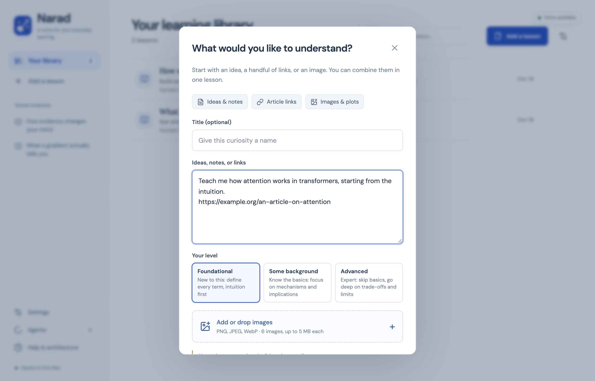
Four ways through the same material
Every lesson is written four ways from the same reviewed source, so you can skim it, study it, hear it argued, or be taught it.
A few sentences per source, then how the sources fit together. Enough to decide whether to go deeper.
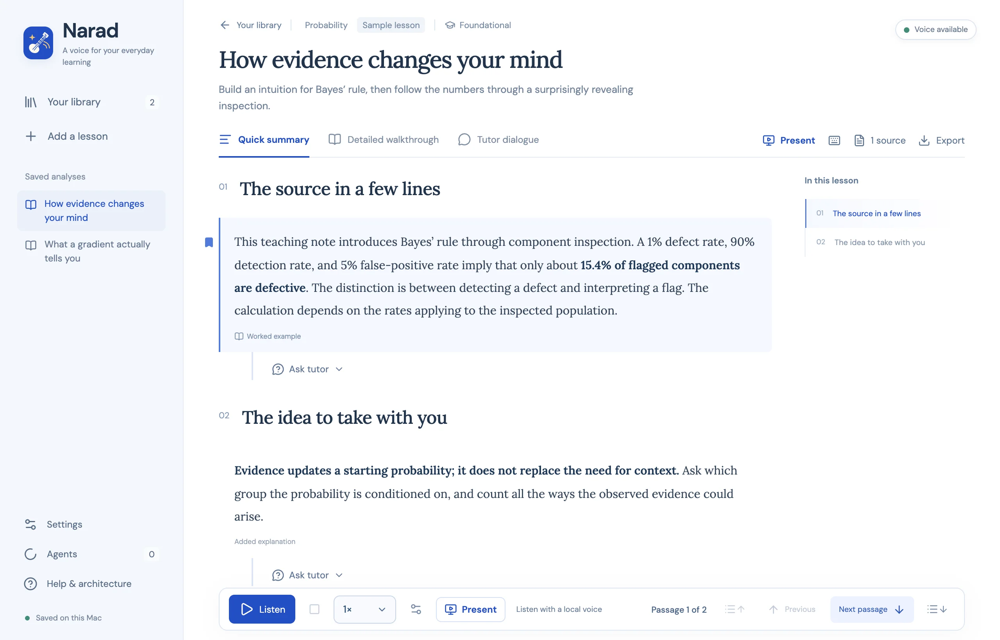
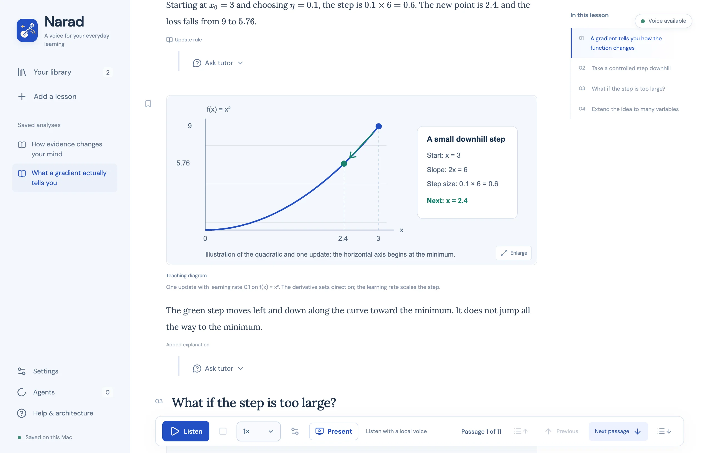
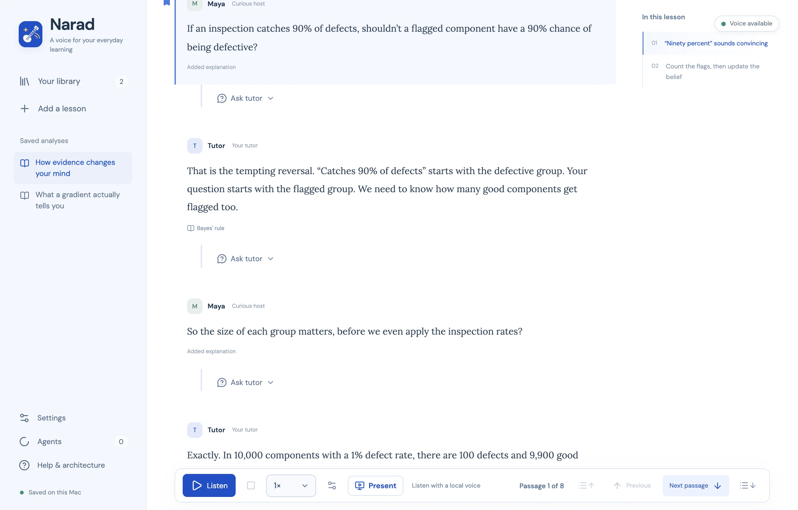
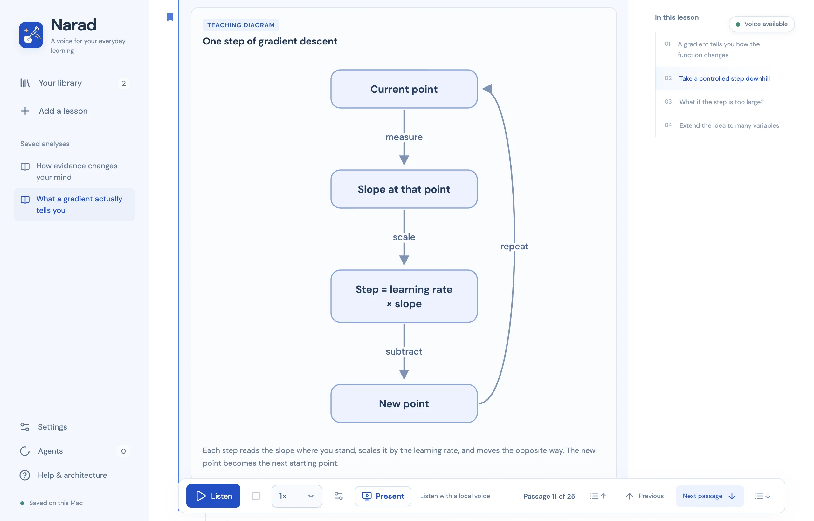
A course that asks something of you
Course turns each section into a short lesson: a goal, key points on screen while the full explanation is spoken, and three things that make you think instead of nod.
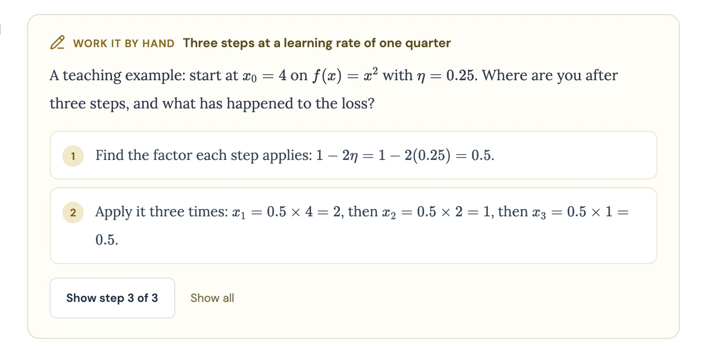
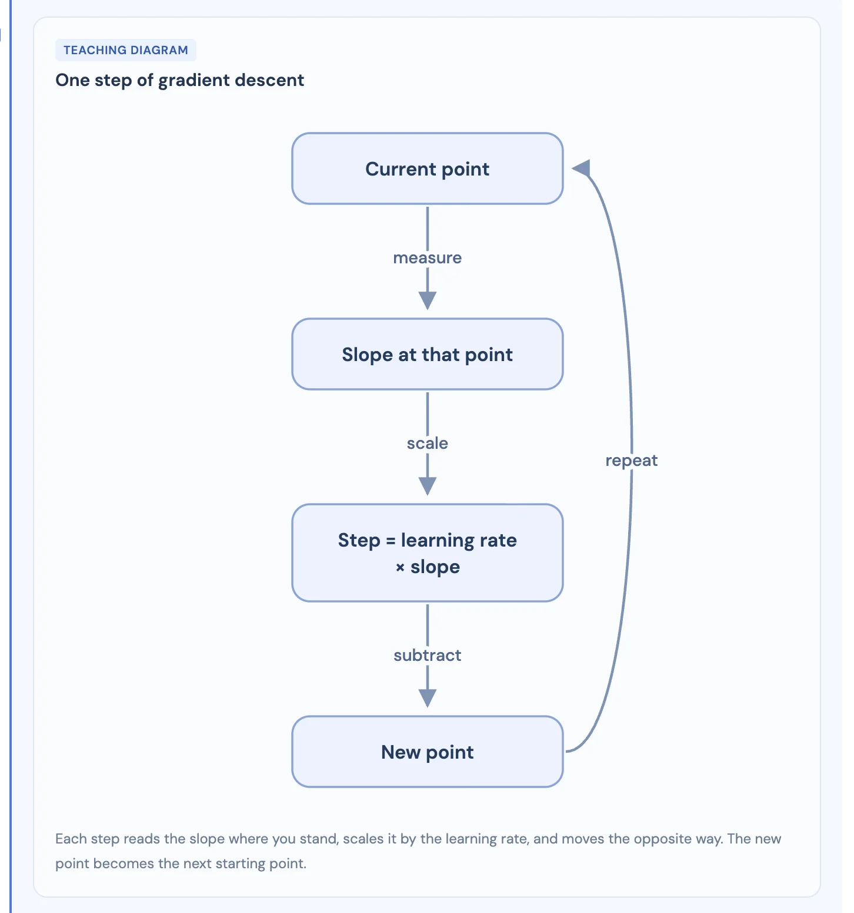
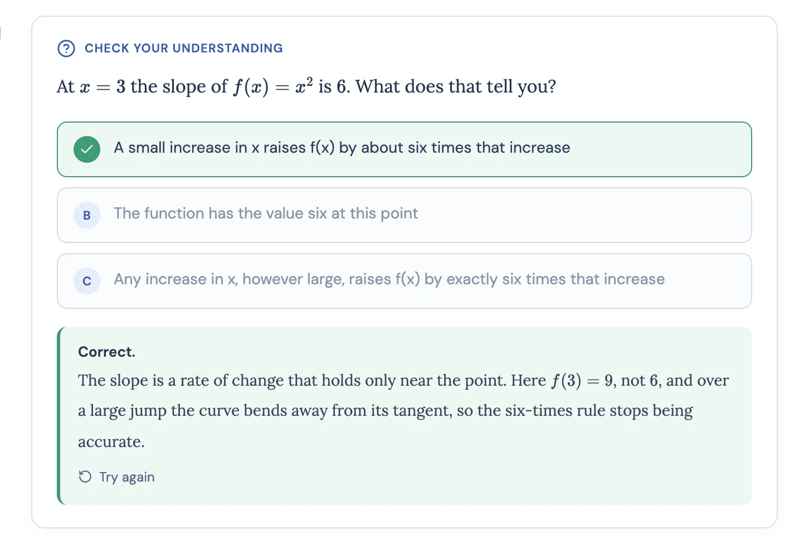
Listen while the picture stays put
Narration follows the text and keeps the current figure on screen until the next one. Formulas and numbers are spoken the way a person would say them.
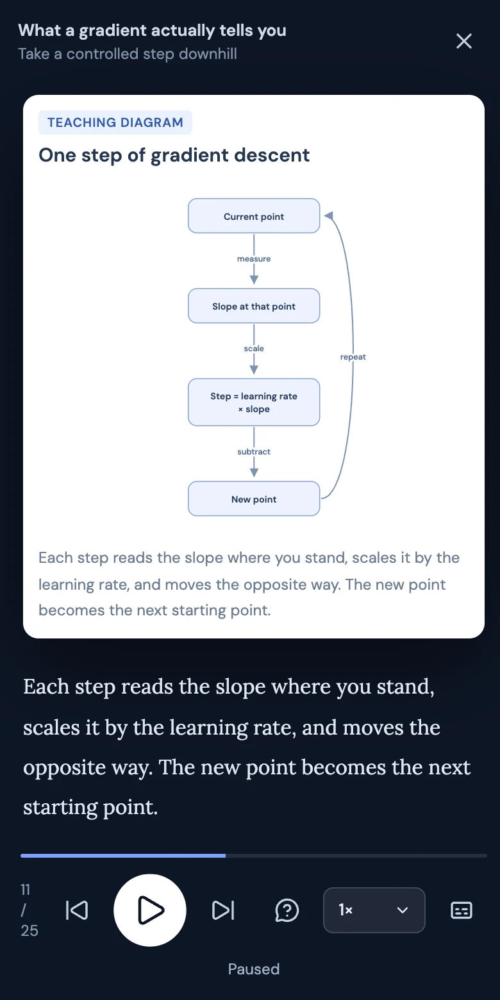
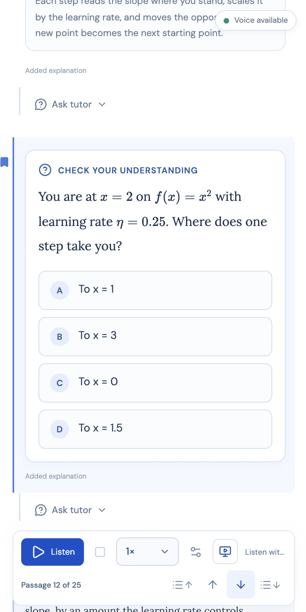
- The voice runs on your MacLesson text is never sent to a speech service, and narration audio is never saved.
- Separate voicesA narrator for explanations, and a host and a tutor for the dialogue.
- On your phone tooReach your Mac privately from an iPhone and control playback from the lock screen.
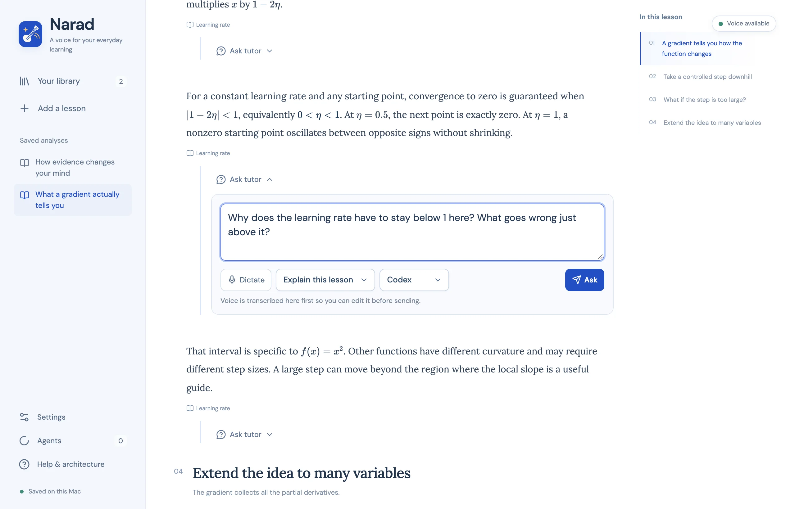
Ask about the exact sentence
Every passage has its own place for questions. The tutor answers about that passage, with the lesson and its sources in front of it.
- Type a question or dictate it.
- Keep the answer inside the lesson, or let the tutor research further and cite what it found.
- Answers can include equations, the lesson's own figures, and simple diagrams and plots.
- Your questions stay under the passage, so the lesson grows with you.
What you need, and what stays private
To run it
- A Mac. The local voice needs Apple Silicon.
- Node.js 24 or newer.
- Codex or Claude installed and signed in. Narad uses your own account to write lessons.
git clone https://github.com/Apoorva87/Narad.git
cd Narad
./setup.sh --with-speech
npm run devThe voice model is a one-time download of about 7.6 GB. Leave out --with-speech to read without listening.
On your Mac, not ours
- Your library is a folder of plain files you can open, copy and edit.
- Narad listens only on your own machine unless you choose to reach it from your phone.
- Lesson writing goes through the AI account you already have. Nothing goes to a Narad server, because there isn't one.
- Captured articles keep their credits, and nothing is presented as fact that the source does not say.
The default voice, Breeze TTS 2, is licensed for personal and research use. Qwen3-TTS is included as an alternative under Apache 2.0.